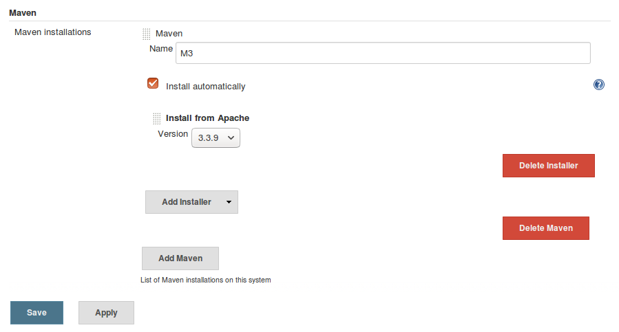
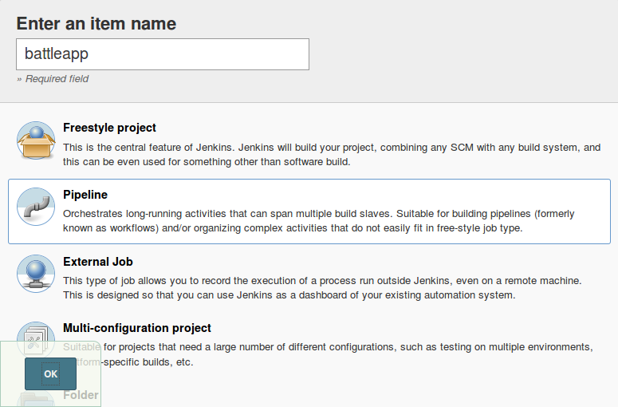
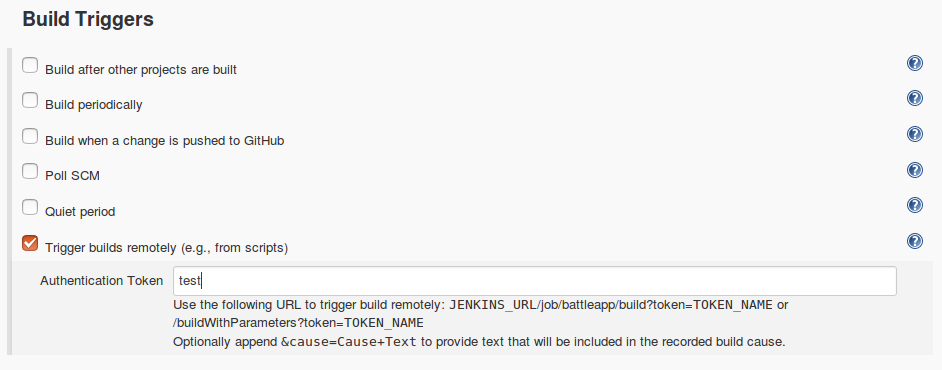
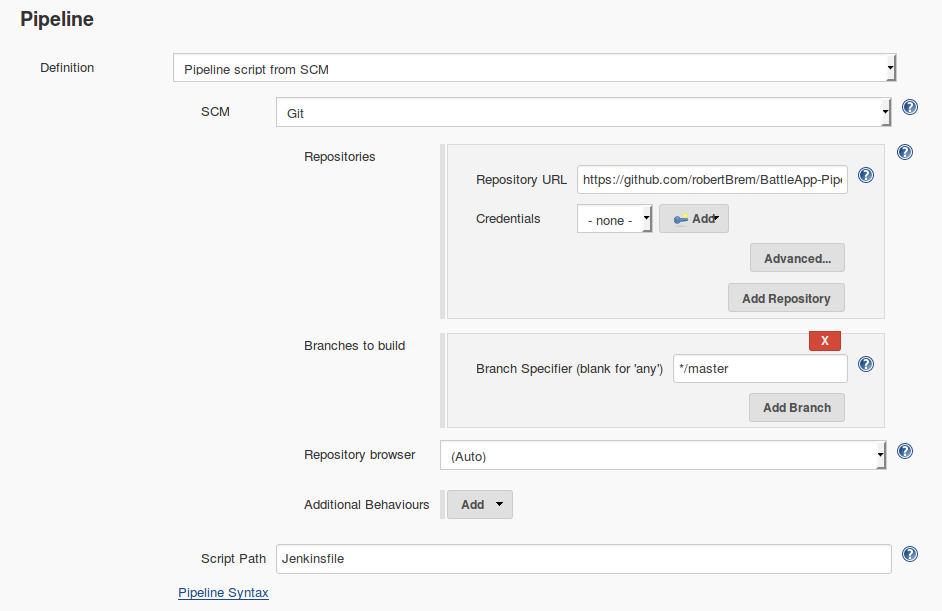

Build and push CI step
The first step of the CI/CD pipeline is the creation of the service as a Docker image.
Create a Jenkinsfile
To create a new pipeline we've to create a Jenkinsfile similar to this one.
withEnv(["VERSION=1.0.${currentBuild.number}", "REGISTRY_EMAIL=brem_robert@hotmail.com"]) {
stage "checkout, build, test and publish"
node {
git url: "https://github.com/robertBrem/battleapp"
def mvnHome = tool 'M3'
sh "${mvnHome}/bin/mvn clean install"
sh "./build.js"
}
}
Install Maven in Jenkins
Before we can execute this pipeline we have to install Maven in Jenkins.
Manage Jenkins Global Tool Configuration Add Maven
There we set the name to M3

Create the build script
The script to build and push the Docker image is written in JavaScript and gets executed with Nashorn.
#!/usr/bin/jjs -fv
var version = $ENV.VERSION;
var username = $ENV.REGISTRY_USERNAME;
var password = $ENV.REGISTRY_PASSWORD;
var email = $ENV.REGISTRY_EMAIL;
var registry = "disruptor.ninja:30500";
var image = "robertbrem/battleapp";
var completeImageName = registry + "/" + image + ":" + version;
var dockerBuild = "docker build -t " + completeImageName + " .";
execute(dockerBuild);
var dockerLogin = "docker login --username=" + username + " --password=" + password + " --email=" + email + " " + registry;
execute(dockerLogin);
var push = "docker push " + completeImageName;
execute(push);
function execute(command) {
$EXEC(command);
print($OUT);
print($ERR);
}
This script is available as live script.
That the script can be executed it has to be executable:
chmod 750 build.js
Create the pipeline in Jenkins
Now create the Jenkins pipeline with the created Jenkinsfile.
Click in Jenkins on New item with the name battleapp and of type Pipeline.

Choose Trigger builds remotely (e.g., from scripts) and set a token.

Choose Pipeline script from SCM with the following settings:

Then Save and Build Now.